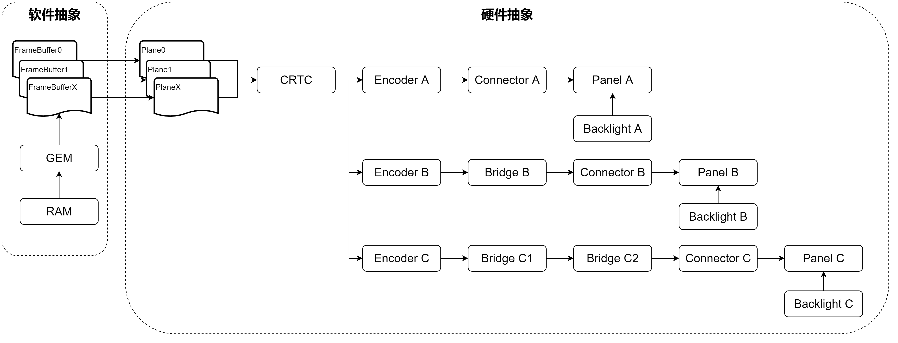
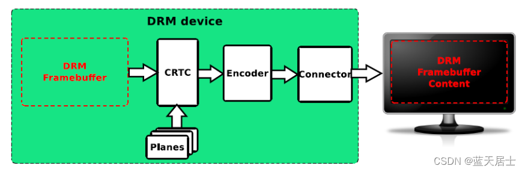
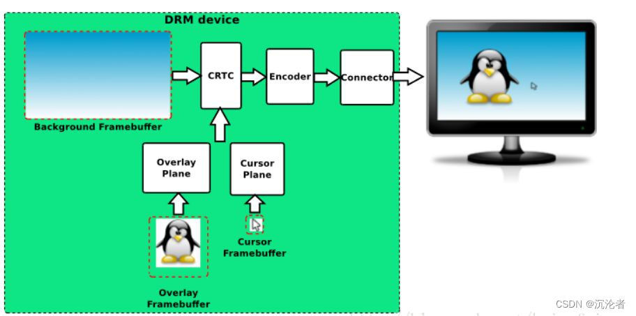
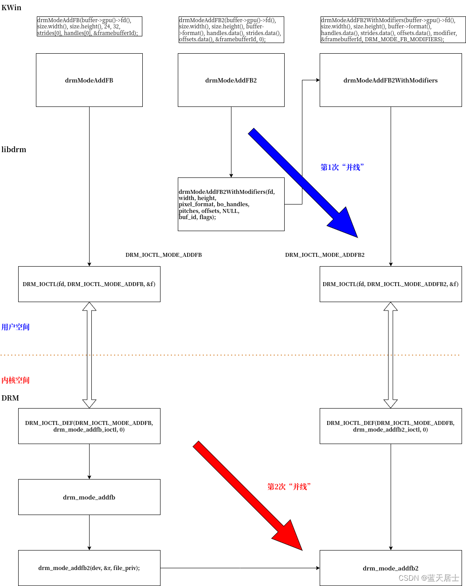
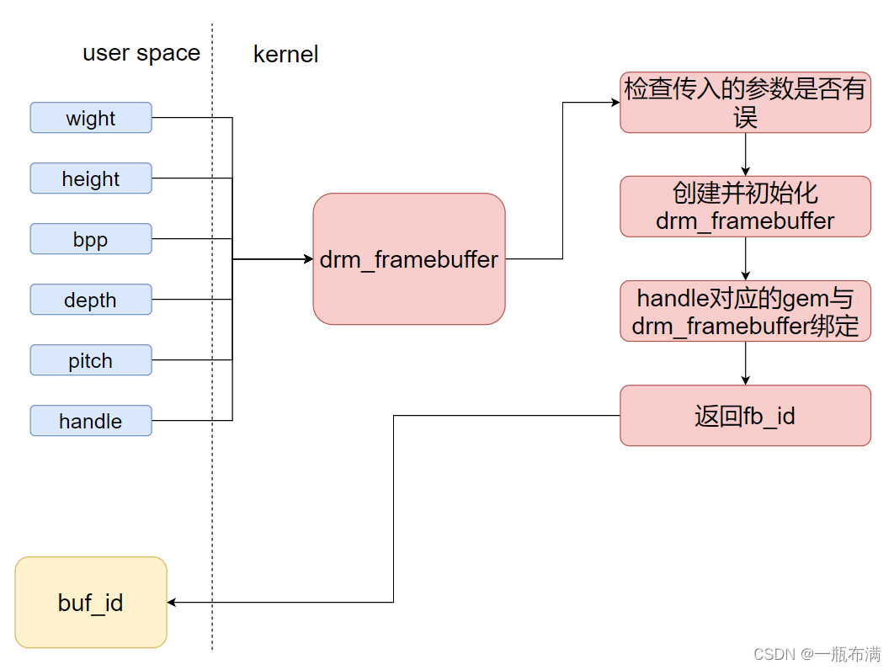
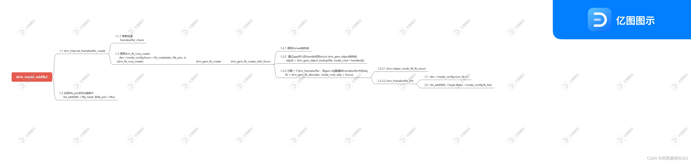
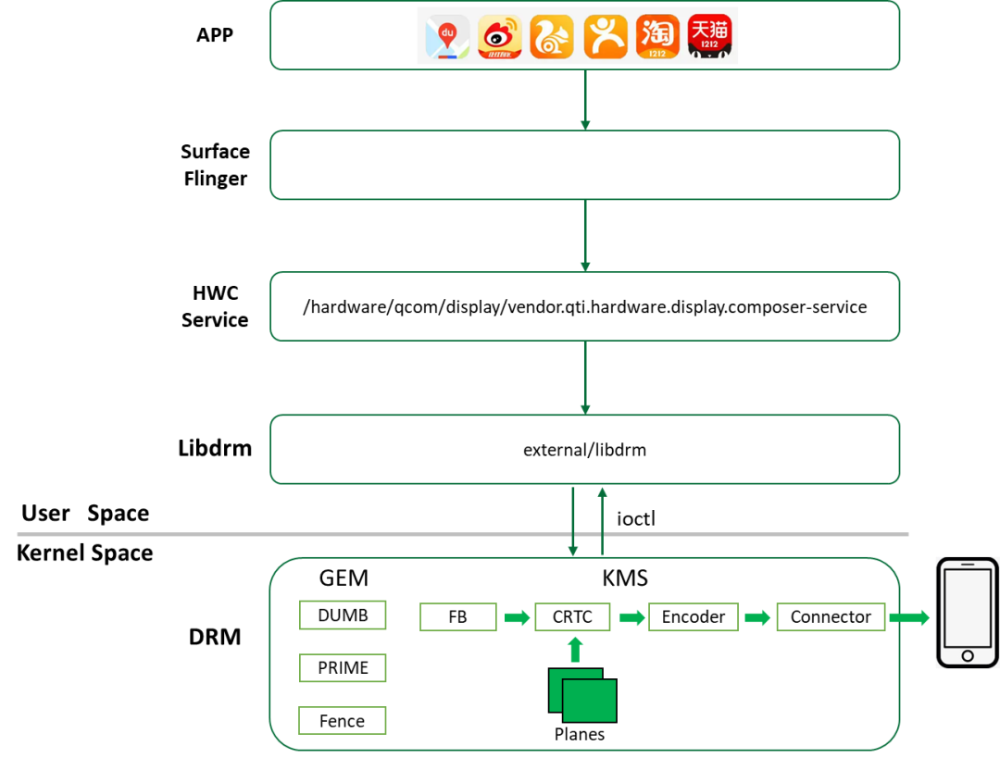
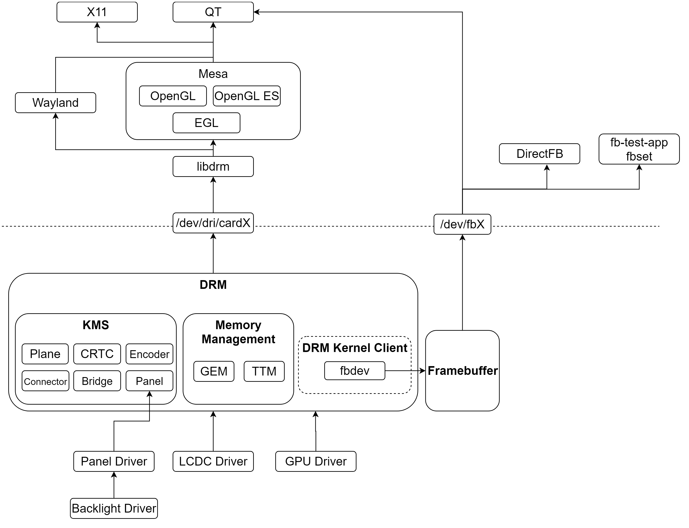
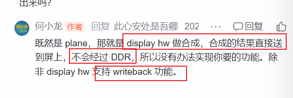

1. 目录
2. why-从功能0层角度，DRM的作用是啥？
3. what--基于why的what
必然存在硬件图层（plane）：
DRM_PLANE_TYPE_PRIMARY：主要图层，通常用于仅支持RGB格式的简单图层 DRM_PLANE_TYPE_OVERLAY：叠加图层，视频图层（YUV格式的）-----------> 现在也支持RGB格式的了，与PRIMARY无异 -------->了！！意味着 GPU实际上可以合成两个硬件层！！！！
DRM_PLANE_TYPE_CURSOR：光标图层，用于显示鼠标
本质上说，plane是硬件抽象------------- 功能： 承载硬件显示能力（对软件侧呈现）

4. drm ------ 待整理
4.1.1. 一些图
0层物理图


TODO: FrameBuffer是 plane级别的？？？？？？？？？？
0层调用图


图来源： 图不好，上下关系不对
drm_mode_addfb2调用流程：

4.1.2. 参考：
https://download.csdn.net/blog/column/11175480/133747645 KWin、libdrm、DRM从上到下全过程 —— drmModeAddFBxxx（1）
5. 好文
各种概念：
Framebuffer、CRTC，ENCODER，CONNECTOR，PLANE，VBLANK，property
Framebuffer： 一个图层，display级别
CRTC：
5.1. Drm 0层链路

好文： Linux显示（三）：DRM子系统(以及LCDC/Panel/Backlight驱动) 系列文章
https://download.csdn.net/blog/column/11305753/120255137 图显系统DRM CRTC完全解析

https://blog.csdn.net/u012839187/article/details/106469038 display:weston渲染流程:commit
很详细！！
非常好非常好的DRM系列文章：何小龙
结论：

https://blog.csdn.net/hexiaolong2009/article/details/84934294